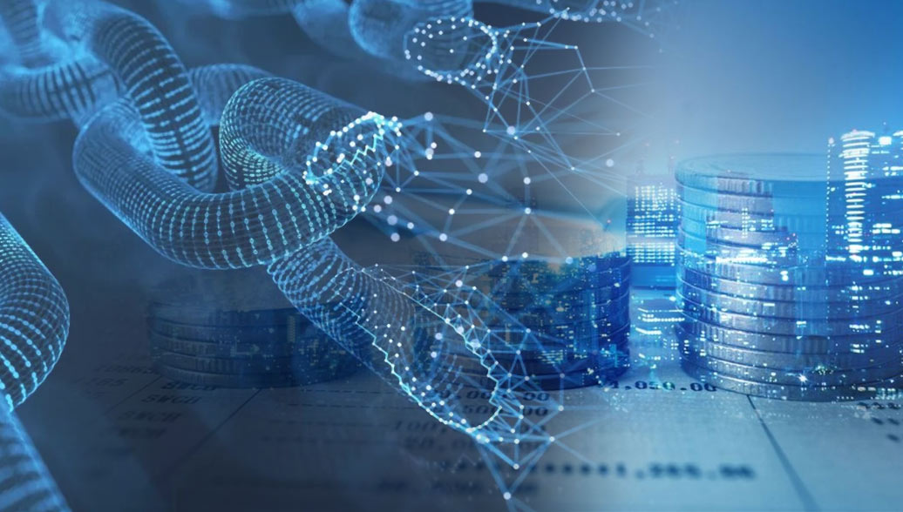

Технологические тренды 2025 года
-
Блокчейн (Blockchain)
Блокчейн — это технология сбора данных, которую можно графически сравнить с бухгалтерской книгой. Однако, в отличие от традиционной книги, в ней нельзя просто «вырвать страницу», так как записанные данные остаются в ней навсегда и не могут быть удалены. Это отличает блокчейн от любых других средств сбора информации о товарах, поскольку такое решение является гарантией прозрачности, что, в свою очередь, внушает доверие. Следовательно, от этого выигрывают и производитель, и потребитель.
Наиболее узнаваемыми примерами использования технологии блокчейн являются биткоин и другие криптовалюты, однако блокчейн — гораздо больше, чем криптоиндустрия. Это чрезвычайно интересная технология, признанная во многих отраслях: от юридических услуг до здравоохранения, торговли и даже государственного управления. Если внимательно следить за развитием этой технологии в мире, то можно предположить, что в будущем блокчейн будет набирать все большее влияние на мировую экономику. Технология блокчейн позволяет создавать инновационный и прозрачный бизнес. Используя ее, производитель удовлетворяет потребности современного, осведомленного и требовательного потребителя. Потенциал этой технологии хорошо известен гигантам продаж, таким как Louis Vuitton или H&M, которые первыми внедрили ее в свою деятельность.